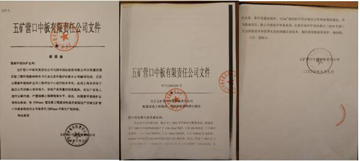
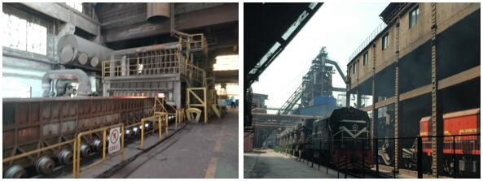
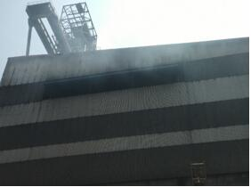
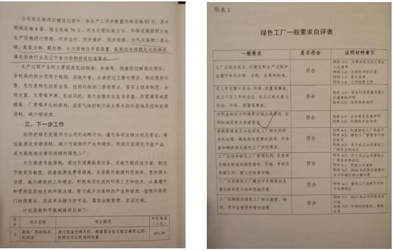
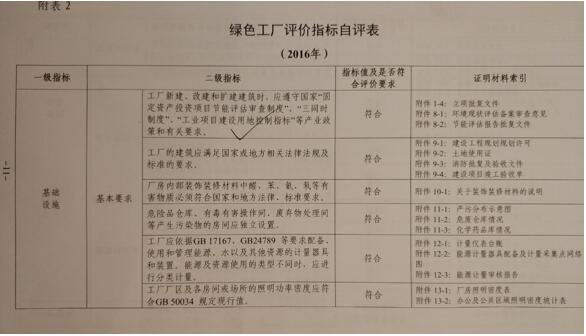

中国五矿营口中板公司长期超标排放 申报弄虚作假 “绿色工厂”名不符实
中央第七生态环境保护督察组2019年7月10日进驻中国五矿集团有限公司后，陆续收到多起关于五矿营口中板有限责任公司（以下简称“营口中板公司”）环境污染问题的群众投诉。督察组随即对其进行突击检查，发现该公司存在未按要求和承诺淘汰落后生产设施、污染物超标排放，以及在“绿色工厂”申报过程中弄虚作假等问题。
一、基本情况
营口中板公司为中国五矿集团有限公司的控股子公司，2018年5月被原辽宁省工信委纳入“辽宁省第一批绿色工厂名单”。该公司拥有烧结、球团、炼铁、炼钢、轧钢、发电等钢铁生产及相关配套设施，具备年产620万吨铁、600万吨钢的综合生产能力。
2003年，五矿集团和五矿发展共持股41.67%，成为营口中板公司最大股东，之后该公司股权多次发生变更。目前，五矿集团是该公司最大股东，持股54.04%。
二、主要问题
（一）“以新代老，上大压小”承诺落空
2003—2005年期间，营口中板公司陆续建成投产4座450m3高炉和1台132m2烧结机。因不符合当时产业政策，2005年9月，该公司向营口市发改委承诺“在现有高炉炉役结束后（2010年前），改为国家倡导和世界先进的熔融还原技术，淘汰现有铁前和高炉、烧结机”。同时，该公司向原国家环境保护总局承诺“在5500mm宽厚板工程建设完成并实现达产后，将现有的2800mm中板生产线拆除”；2005年10月，原国家环境保护总局在批复该公司宽厚板工程时，也明确要求“淘汰现有2800mm轧机生产线”。
2005年9月至2011年10月期间，辽宁省发改委和辽宁省原环境保护厅均指出该公司4座450m3高炉和1台132m2烧结机等设备不符合国家准入条件，要求在2010年前淘汰。在批复该公司宽厚板配套工程中明确要求：“必须按照国家规定和有关部门要求，淘汰现有4台450m3高炉和132m2烧结机”。
督察组现场检查发现，该公司4座450m3高炉、1台132m2烧结机以及2800mm中板生产线仍在正常生产。时隔14年，其“以新代老，上大压小”的承诺仍未兑现。

图1 企业关于拆除2800mm中板，淘汰2005年现有铁前、高炉、烧结机的承诺函和报告
.
图2 企业现场132m2烧结机、450m3高炉正在生产
（二）环境违法多发，频繁受到处罚
2014—2018年，该公司因环保手续不完善、配套污染治理设施建设滞后、超标排放等环境问题共计受到环境行政处罚40次，累计罚款2320.98万元，其中600m2烧结机因配套脱硫脱硝工程迟迟未建成投运被“按日计罚”处罚11次，累计按日计罚天数多达306天。
督察发现，该公司在线监测设施运行不正常、超标排放等问题多发频发。督察人员调阅在线监测数据发现，自2019年6月25日有数据记录至7月17日，竖炉脱硫设施废气排放口颗粒物浓度有30次小时均值超标、二氧化硫浓度有4次小时均值超标；2019年以来，在线监测设施正常运行情况下，132m2烧结机废气排放口颗粒物浓度有218次小时均值超标、二氧化硫浓度有9次小时均值超标、氮氧化物浓度有42次小时均值超标。
2019年7月19日督察组现场检查时，该公司新1号2300m3高炉出铁过程中有大量烟尘无组织排放。

图3 企业新1号2300m3高炉烟尘无组织排放严重
（三）企业累罚累犯，群众反映强烈
由于管理不到位和污染防治设施建设滞后，加之该企业累罚累犯，污染排放问题突出，群众投诉集中。据统计，辽宁省第一轮中央环境保护督察及“回头看”期间，共收到12起关于该企业环境污染问题的举报件；本次督察进驻以来，从7月10日至7月27日，共收到针对营口中板公司的群众举报4件。另据不完全统计，2014年以来，地方环保部门和12369举报平台共收到50余起关于营口中板公司环境污染问题的信访举报。
（四）在绿色工厂申报过程中弄虚作假
2017年8月，原辽宁省工信委发布的《关于开展辽宁省绿色工厂和绿色园区评定工作的通知》指出，申请绿色工厂的必要条件之一是“企业三年内未发生重大安全、环境、质量等事故，未受到相关部门的处罚”。经查，该公司自2015年至2017年8月，因环境违法问题被原营口市环保局处罚26次，罚款共计2200.8万元，但在申报绿色工厂的材料中，该公司只字未提，故意隐瞒违法事实。
营口中板公司在编写《绿色工厂自评价报告》时，仅提供一份不能全面准确反映企业各类污染物排放情况的检测报告，并称其“大气污染物二氧化硫、氮氧化物、颗粒物，水污染物化学需氧量、氨氮均连续稳定达标排放，满足钢铁行业及辽宁省污染物排放标准要求”。但督察组调阅有关监测数据显示，2017年该公司180m2、600m2烧结机废气排放口颗粒物、二氧化硫、氮氧化物浓度等多次出现超标。
该公司在绿色工厂申报中，通过瞒报和虚假填报，最终于2018年5月被原辽宁省工信委纳入“辽宁省第一批绿色工厂名单”，并于2019年7月被工业和信息化部纳入“第四批绿色工厂公示名单”。


图4 企业《绿色工厂自评价报告》弄虚作假
三、原因分析
营口中板公司对生态环境保护工作重视不够，没有很好履行生态环境保护主体责任；生态环境法律意识淡薄，绝大多数建设项目未批先建；对待环境违法处罚不以为然，不当回事，烟尘无组织排放、超标排放等问题长期得不到纠正和整改。
营口中板公司股权自2015年转到五矿集团后，集团党组决定委托五矿发展股份有限公司代为管理，但五矿发展股份有限公司日常管理严重缺位，明知营口中板公司屡屡发生环境违法行为且多次被处罚的情况，但在考核中既未实施扣分，也未追责问责，长期听之任之。
督察组将进一步调查核实有关情况，并按有关要求和程序做好后续督察工作。
本文信息来源国家生态环境部
原文编辑: EHS资讯
原文链接: https://ehsinfo.cn/2019/08/22/五矿营口中板公司长期超标排放.html
版权声明: 转载请注明出处(必须保留作者署名及链接)